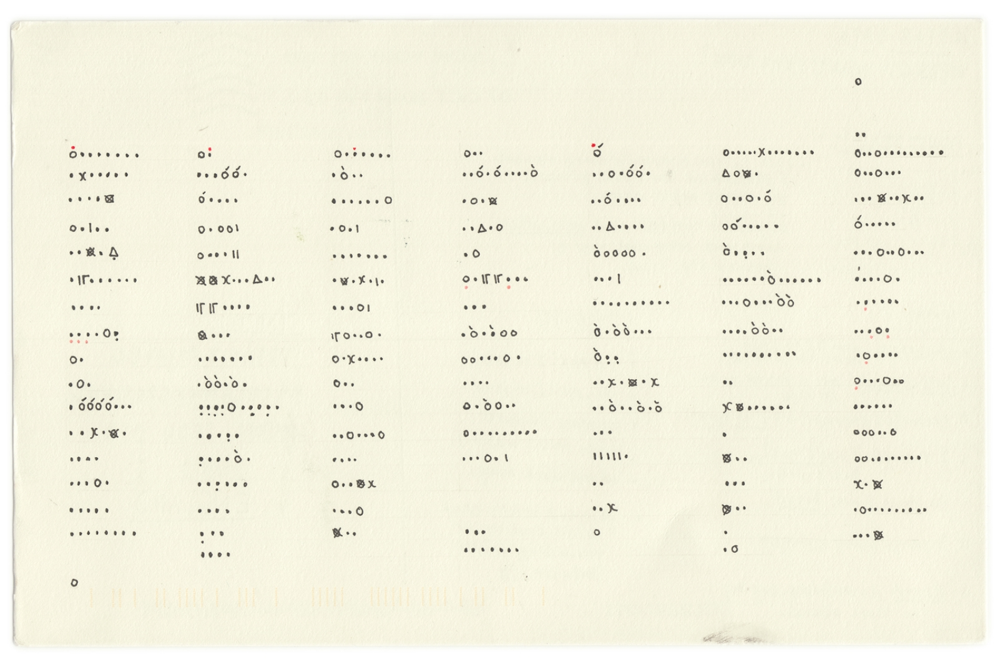

This is a formative study on the personal visualizations two designers produced over the course of an entire year. Please visit the original website to check out their amazing work!
All credits go to Giorgia Lupi and Stefanie Posavec.